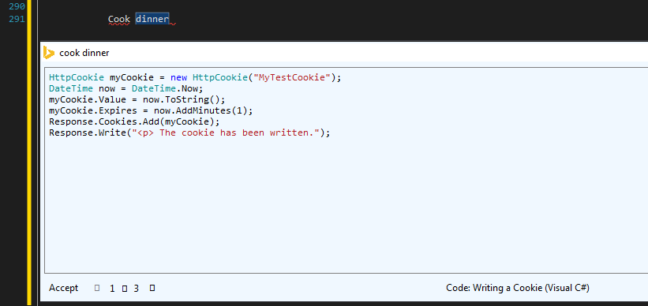

Michal Paszkiewicz
Blog
Quintus and Bing Code Search
This week has been rather busy, but this hasn't stopped me having a look at two cool things in my spare time - Quintus, the Html5 game engine, and Microsoft's Bing Code Search.
Quintus
LinkI have only just started learning to use this thing, but I'm already impressed - a hundred lines of code and I have a poorly painted sprite braving a run across a platform that seems to have managed to find a way to make blocks levitate. Now all I need is a scoreboard and It'll be the new flappy bird.
Bing Code Search
Bing Code Search is a great new extension for visual studio that you can find on the visual studio gallery right here.
This awesome new tool increases workers' productivity tenfold by minimising the time taken between starting to write a function and pasting in the correct code from the internet.
Lets face it. Most programmers will spend 490% of their lifetime copying and pasting code from stackoverflow. Bing code search lets you find the function you are looking for in seconds and paste it in with the click of a button, without ever leaving visual studio!
In addition, it has hidden extra features, such as cooking lessons:
Everyone knows geeky programmers only eat cookies for dinner.